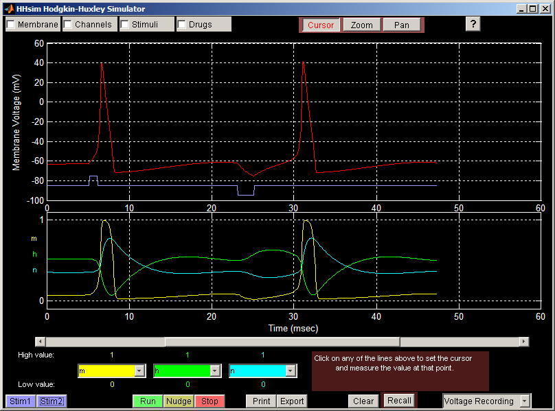

HHsim: графический симулятор Ходжкина–Хаксли
Дэвид С. Турецки (David S. Touretzky),
Марк В. Альберт (Mark V. Albert), Натаниэль Д. Доу (Nathaniel D. Daw),
Алок Ладсария (Alok Ladsariya) и Махтияр Бонакдарпур (Mahtiyar Bonakdarpour)
Это русский перевод сайта https://www.cs.cmu.edu/~dst/HHsim/
и русифицированная версия программы HHsim. Перевод неофициальный; оригинальная
(английская) версия программы и документации доступна на официальном сайте.
HHsim — это графическая модель участка возбудимой мембраны нейрона,
основанная на уравнениях Ходжкина–Хаксли. Программа даёт полный доступ
к параметрам Ходжкина–Хаксли, параметрам мембраны, параметрам стимула
и концентрациям ионов.
Об уравнениях Ходжкина–Хаксли можно прочитать здесь (все материалы — на английском языке):
В отличие от NEURON или GENESIS — гораздо более сложных исследовательских
инструментов, — HHsim представляет собой простую учебную программу,
созданную специально для курсов нейрофизиологии для студентов и аспирантов.
Интерфейс осваивается за пару минут и даёт студенту множество возможностей
для экспериментов.
HHsim — свободное программное обеспечение, распространяемое на условиях
GNU General Public License (Стандартной общественной лицензии GNU).
Официальный сайт HHsim: https://www.cs.cmu.edu/~dst/HHsim.
Документация, включая снимки экрана,
доступна на этом сайте, а также входит в состав программы при её загрузке.
Кроме того, прилагаются примеры упражнений для работы
с симулятором.
Скачать HHsim
Русская версия HHsim распространяется в виде установщиков для Windows и macOS,
которым не нужна лицензия Matlab: установщик сам загрузит и установит
бесплатную среду выполнения MATLAB Runtime. Исходный код также доступен отдельно;
на Linux используйте исходный код. Текущая русская версия — 3.7-ru
(основана на HHsim 3.7 от 27 августа 2025 г.).
Оригинальная английская версия доступна на официальном сайте:
Установка русской версии (3.7-ru)
Windows:
- Скачайте HHsim-3.7-ru-Windows-Installer.exe.
- Запустите его. Для установки нужны права администратора. Если Windows SmartScreen
предупредит о неизвестном издателе, нажмите «Подробнее» → «Выполнить в любом случае».
- Следуйте указаниям установщика, нажимая «Далее» («Next»). Нужно подключение
к Интернету: установщик сам скачает и установит среду выполнения MATLAB Runtime,
необходимую для запуска автономных приложений MATLAB.
- Установщик поместит HHsim в меню «Пуск» (по желанию — и на рабочий стол).
Всё готово для работы.
Linux:- Запускайте HHsim из исходного кода. Для этого сначала нужно установить MATLAB
(R2020a или новее): распакуйте HHsim-3.7-ru-source.zip, запустите MATLAB, перейдите
в каталог
code и введите hhsim.
macOS:
- Скачайте архив для своего компьютера: Apple Silicon (M1, M2, M3, M4…) или Intel.
Тип процессора указан в меню Apple → «Об этом Mac».
- Распакуйте архив двойным щелчком — появится приложение-установщик HHsim-3.7-ru-macOS-…-Installer.
- Откройте установщик: щёлкните по нему правой кнопкой мыши (или с нажатой клавишей Control)
и выберите «Открыть», затем ещё раз «Открыть» в предупреждении — программа не подписана
сертификатом Apple. Если macOS всё равно не даёт её запустить, откройте «Системные
настройки» → «Конфиденциальность и безопасность» и нажмите «Всё равно открыть».
- Следуйте указаниям установщика. Он скачает и установит MATLAB Runtime (нужно
подключение к Интернету), а затем HHsim — по умолчанию в папку «Программы» (/Applications).
Установка оригинальной версии (3.6)
Windows:
- Распакуйте hhsim_36_win.zip в любой каталог.
- Запустите HHsim_36.exe — это установщик HHsim. Для запуска установщика у вас должны быть
права администратора на этом компьютере.
- Не обращайте внимания на параметр «Connection» («Подключение») и просто нажимайте кнопку «Next» («Далее»).
- Сначала установщик установит компонент MATLAB Runtime,
который позволяет запускать автономные приложения MATLAB. Затем он установит HHsim и
поместит значок на рабочий стол.
- Теперь HHsim готов к работе.
Linux:- Запускайте HHsim из исходного кода. Для этого сначала нужно установить MATLAB.
Mac (архитектура Intel):
- Распакуйте HHsim3_6_Mac.zip в любой каталог.
- С помощью образа MCR_Installer (dmg) установите компонент MATLAB Runtime,
который позволяет запускать автономные приложения MATLAB. ВНИМАНИЕ:
обязательно используйте каталог по умолчанию:
/Applications/MATLAB/MATLAB_Component_Runtime/v76
-
С помощью образа HHSim (dmg) установите HHsim.
Пример снимка экрана:

Руководство пользователя HHsim
Эта работа частично поддержана грантом Национального научного фонда США (NSF)
DGE-9987588. Любые мнения, выводы или рекомендации, изложенные здесь, принадлежат
авторам и не обязательно отражают точку зрения Национального научного фонда.
Дэйв Турецки (автор оригинала)
Последнее изменение оригинала: Mon Jul 31 17:29:49 EDT 2017